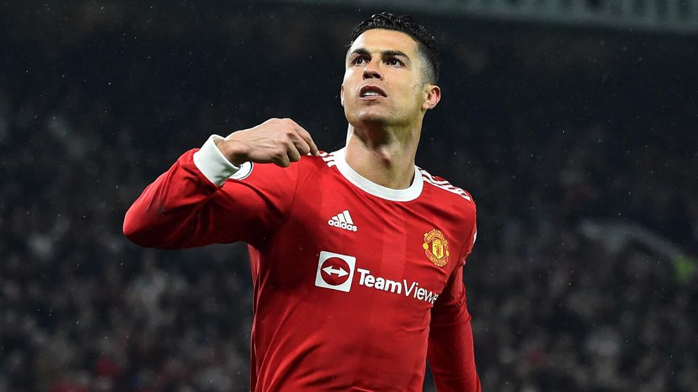

10 CURIOSIDADES QUE NO SABIAS DEL LA CHAMPIONS LEAGUE
La competición europea de la Champions League guarda una serie de datos curiosos que son desconocidos, como por ejemplo, ¿cuál ha sido el gol más rápido en anotarse?
La gran final de la Liga de Campeones 2022 entre Liverpool y Real Madrid tendrá lugar el 28 de mayo a las 21:00 horas en el Stade de France de Saint-Denis de París. Todos estarán pendientes de la gran pantalla para ver uno de los partidos más importantes del año, puesto que, sin duda, la Champions League es la competición por excelencia. Su origen se remonta a la temporada de 1955/56 bajo el nombre de "Copa de Europa". Desde entonces, su historia es amplia y muy curiosa. De hecho, después de más de 65 años de competición, se puede hacer un recorrido por los momentos más famosos y sus personajes más importantes.
1. ¿Cuándo se marcó el gol más rápido?
Roy Makaay tiene el honor de haber sido el jugador que marcó el gol más rápido en la historia de la Champions. Este acontecimiento se dio ante el Real Madrid en 2007 en un tiempo récord de 10,12 segundos.2. ¿Quién es el goleador más joven de la competición?
Ansu Fati, jugador del FC Barcelona, es el goleador más joven de la competición. Tan solo llevaba 90 segundos en el césped cuando el jugador anotó el gol que lo convirtió en el jugador más "inexperto" en marcar un gol en la historia de la Champions League con 17 años y 40 días. Este gol tuvo lugar en diciembre de 2019 en el partido que enfrentaba a Barça y al Inter de Milán3. ¿Qué jugador ha ganado la Champions League con más equipos diferentes?
Clarence Seedorf es el jugador que más veces ha ganado la Champions League con más equipos. Este ganó la Champions con el Ajax (94/95), el Real Madrid (97/98) y el AC Milán ( 02/03 y 06/07).4. ¿Quién es el jugador más veterano en jugar la Champions League?
El portero italiano Marco Ballotta fue el jugador más veterano en disputar la Champions League. Este acontecimiento se produjo en el partido de Champions entre Real Madid-Lazio en 2007 y Marco Bellotta tenía 43 años y medio, de tal forma que se convirtió en el jugador con mayor edad en jugar un partido de Liga de Campeones.5. ¿Cuál es el equipo que más Champions ha ganado?
El RealMadrid es el equipo que más Champions tiene, concretamente, ha conquistado 13 títulos entre Copas de Europa y Champions League a lo largo de su historia: 1955-56. 1956-57.6. ¿Cuál ha sido la mayor goleada de la historia de la Champions?
La mayor goleada de la Champions tuvo lugar el 18 de mayo de 1960, día en el que se enfrentaron el Real Madrid y el Eintracht Frankfurt en un partido de Copa de Europa que acabó con un marcador de 7-3. Este ha sido el resultado más abultado hasta el momento en la competición europea7. ¿Cuál es el jugador con más partidos de Champions?
En lo que tiene que ver al jugador con más partidos de Champions, ese es Iker Casillas. Se trata del futbolista que más encuentros ha jugado en la máximo competición europea con 177 partidos.8. ¿Quién es el máximo goleador de la Champions?
Cristiano Ronaldo es el máximo goleador histórico de la competición europea (incluyendo ronda de clasificación) con un total hasta el momento de 140 goles.